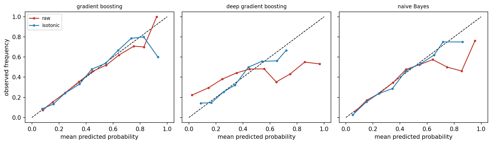
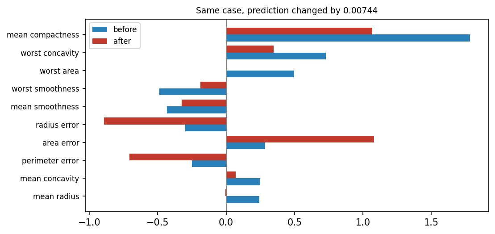
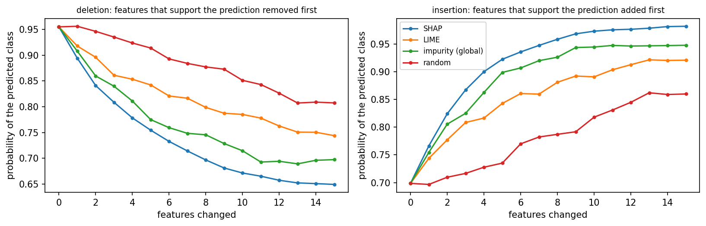

Overview
An explanation is only as reliable as the model behind it and the method that produced it. This day asks three questions. Can the probabilities of a model be taken at face value [1], and does the model still work when the population changes? Can an explanation be trusted, or can it be changed while the prediction stays the same [2, 3], and does it beat a random ranking [4]? Can the decisions be trusted, or do they treat groups differently through a hidden proxy, a feature that stands in for the group [5]? Each question comes with a test that can be run on any model.
Day at a glance
flowchart LR A["Can the probability be trusted?"] --> B["Calibration"] A --> C["Shift"] D["Can the explanation be trusted?"] --> E["Manipulation"] D --> F["Benchmark against random"] G["Can the decision be trusted?"] --> H["Fairness and proxies"] F --> I["Python step 4"]
Every method on this page is also written as Python code in the Colab notebook of the day. A Colab notebook is a document of text and Python code that runs in the web browser, with nothing to install. Its code is divided into numbered sections. Each orange box on this page names the section whose code carries out what the text above the box explains. The box says what to run and what to look at in that section, and its button opens the notebook at that place. The practice parts and the self-assessment of the day are in the interactive lab.
Can the probability be trusted?
Days 1 to 3 explained the models of the diagnosis case. Readable models showed their reasons directly, the random forest of the tumour data was explained from the outside, and the pixel-level maps of a convolutional network pointed at the hidden marker of the lesion images in every test image.
The audit now turns from what the models do to how far their results can be trusted. The lesion network and the tumour data return in these tests, and a credit model joins them as a second case, because the treatment of groups of applicants raises the question of fairness.
The classifiers of this day return a probability. For a case with the input \(x\), the model \(f\) returns \(p = f(x)\), a number between 0 and 1: the predicted probability that the case belongs to the positive class, the class with the label \(y = 1\). A model is calibrated when its probabilities mean what they say: Among cases scored 0.8, about 80 percent are positive. As a formula, in which the vertical bar reads given:
In words: Among all cases to which the model gives the probability \(p\), the share of positive cases is \(p\). The day tests this on synthetic credit data, which the fairness section below describes in full. There are 4000 applicants with six features, and the positive class is that the applicant repays the loan, which 31 percent do. Every model is trained on 2800 applicants and judged on the other 1200, the test cases.
One exact probability value occurs too rarely to count a frequency, so the test cases are sorted into bins by their probability. The test uses ten bins of width 0.1: Bin 1 holds the cases with \(p\) below 0.1, bin 2 those from 0.1 to below 0.2, and so on. Let \(p^{(i)}\) and \(y^{(i)}\) be the probability and the label of test case \(i\), and let \(n_b\) be the number of cases in bin \(b\). Two averages describe the bin:
The sign \(\sum\) means: Add the term for every case \(i\) of the bin. The first average, written with a bar, is the mean predicted probability of the bin, also called its confidence. The second is the observed frequency: Because the labels are 0 and 1, their mean is the share of positive cases. A reliability diagram plots the observed frequency against the mean predicted probability in bins, one point per bin. For a calibrated model the points lie on the diagonal.
The expected calibration error, abbreviated ECE, summarises the gaps [1]. It is the average distance of the points from the diagonal, in which every bin counts with its share \(n_b / n\) of the \(n\) test cases:
The sum runs over the bins that contain at least one case. The vertical bars take the absolute value, the distance without its sign, so that gaps above and below the diagonal cannot cancel. An ECE of 0.05 says that the probabilities are off by five percentage points on average. Guo and colleagues define the error with the confidence in the predicted class and the accuracy of each bin. This course uses the form for two classes given here, with the probability and the frequency of the positive class.
Ten cases have the probabilities 0.05, 0.12, 0.35, 0.41, 0.62, 0.68, 0.81, 0.93, 0.97 and 0.22 and the labels 0, 0, 1, 0, 1, 1, 1, 1, 1 and 0, the same cases as in Python step 4. Four bins of width 0.25 sort them. The first bin holds three cases with the probabilities 0.05, 0.12 and 0.22, none of them positive: Its mean probability is 0.13, its observed frequency is 0, and its gap is 0.13. The other three bins hold 2, 2 and 3 cases. Their mean probabilities are 0.38, 0.65 and 0.903, their observed frequencies are 0.5, 1 and 1, and their gaps are 0.12, 0.35 and 0.097.
The error weights every gap with the share of the cases in its bin: \(0.3 \times 0.13 + 0.2 \times 0.12 + 0.2 \times 0.35 + 0.3 \times 0.097 = 0.162\).
The shape of the curve tells in which direction a model errs. A model is called overconfident when its probabilities are more extreme, closer to 0 and 1, than the observed frequencies justify, and underconfident when they stay too close to 0.5. Part B of the interactive lab trains the eye on the shapes of the table.
| Shape of the curve | What the model does | Name |
|---|---|---|
| On the diagonal | Its probabilities match the observed frequencies | calibrated |
| Flatter than the diagonal: above it at low probabilities, below it at high ones | Its probabilities are more extreme than the frequencies | overconfident |
| Steeper than the diagonal: below it at low probabilities, above it at high ones | Its probabilities stay too close to 0.5 | underconfident |
| Below the diagonal everywhere | Its probabilities are too high everywhere | overestimating |
| Above the diagonal everywhere | Its probabilities are too low everywhere | underestimating |
Two common scores do not show calibration. The predicted class, written \(\hat{y}\) with a hat, is positive when the probability is above 0.5, and accuracy is the share of test cases whose predicted class equals the label:
Accuracy only asks on which side of 0.5 a probability lies: A probability of 0.51 counts like one of 0.99. The second score is the area under the receiver operating characteristic curve, abbreviated ROC curve. The area is abbreviated AUC, for area under the curve. It equals the probability that a randomly chosen positive case receives a higher probability from the model than a randomly chosen negative case:
Here \(n_1\) and \(n_0\) are the numbers of positive and negative test cases. A pair consists of one positive case \(i\) and one negative case \(k\). It is correctly ordered when the positive case has the higher probability, and a pair with equal probabilities counts as half. An AUC of 0.5 is the level of guessing, and 1 is a perfect order. The ROC curve itself plots, for every possible threshold, the true positive rate against the false positive rate, two rates that the fairness section below defines. The AUC depends only on the order of the probabilities. Any change that keeps the order, such as squaring every probability, leaves it unchanged, although it changes the calibration.
A third score does react to calibration. The Brier score is the mean squared distance between the probability and the label:
It is 0 for a model that gives every positive case the probability 1 and every negative case the probability 0, and lower is better. A useful yardstick is the model that gives every applicant the same probability, the share of repayers 0.31. Its Brier score is \(0.31 \times 0.69 = 0.214\).
Six of the ten cases of the first worked example are positive and four are negative, which makes \(6 \times 4 = 24\) pairs. In 23 of them the positive case has the higher probability. The exception is the positive case with 0.35 and the negative case with 0.41. The AUC is \(23 / 24 = 0.958\). The ten squared distances add up to 0.9446, so the Brier score is 0.094.
Squaring every probability keeps the order, so the AUC stays at 0.958. The calibration becomes worse: The calibration error with four bins rises from 0.162 to 0.234 and the Brier score from 0.094 to 0.161. The accuracy changes as well, from 0.9 to 0.7, because the probabilities 0.62 and 0.68 fall below 0.5.
A miscalibrated model can be repaired after training. Recalibration learns a calibration map \(c\) that turns each probability \(p\) into a corrected probability \(c(p)\). The simplest map is binning, which the animation below uses: Every probability is replaced by the observed frequency of its bin, measured on cases that were set aside for this purpose:
The day uses isotonic regression, a finer version of the same idea. Isotonic means non-decreasing: The map never goes down when the probability goes up, so the order of the cases is never reversed. Among all such maps, the method chooses the one whose corrected probabilities lie closest to the labels:
The result is a staircase whose steps can have any width. The map has to be fitted on cases that the model did not see during training. The training data are therefore split into five parts. Five times, the model is trained on four parts and the map is fitted on the fifth, and the final probability is the average of the five corrected models.
An ECE computed from 1200 test cases is itself uncertain. The bootstrap measures this uncertainty. It draws 1200 cases at random from the test cases, where the same case may be drawn several times, and computes the ECE of this resample. Repeating this 200 times gives 200 values. The 5th and the 95th percentile, the values below which 5 and 95 percent of them fall, form the bootstrap range. A change of the ECE counts as real only when the ranges before and after do not overlap.
Three credit models are compared. Gradient boosting builds its prediction from many small decision trees, each of which corrects the errors of the trees before it. The default version uses 100 trees of depth 3. The deep version uses 400 trees of depth 6 and fits the 2800 training applicants without a single error. Naive Bayes is a simple model that treats the features as independent within each class. Some models are well calibrated out of the box; others, such as deep ensembles of trees, are overconfident and need recalibration.

In the figure, the red raw curve of the default model follows the diagonal, and only its last three bins, which hold 24, 10 and 2 applicants, scatter. Its ECE is 0.009. The deep model is overconfident. It gives 671 of the 1200 test applicants a probability below 0.1, yet 22 percent of them repay, and of the 95 applicants scored above 0.9 only 53 percent repay. Its curve is much flatter than the diagonal, its ECE is 0.203, and its Brier score of 0.249 is worse than the 0.214 of the constant probability. Isotonic recalibration brings the blue curve back to the diagonal.
| Model | ECE, raw (bootstrap range) | ECE, recalibrated (bootstrap range) | Brier score, raw and recalibrated | AUC, raw and recalibrated |
|---|---|---|---|---|
| gradient boosting | 0.009 (0.017 to 0.040) | 0.019 (0.020 to 0.046) | 0.186 and 0.187 | 0.721 and 0.721 |
| deep gradient boosting | 0.203 (0.186 to 0.227) | 0.026 (0.019 to 0.050) | 0.249 and 0.198 | 0.660 and 0.668 |
| naive Bayes | 0.027 (0.028 to 0.057) | 0.019 (0.017 to 0.047) | 0.194 and 0.191 | 0.703 and 0.703 |
Recalibration repairs the deep model: Its bootstrap ranges before and after, 0.186 to 0.227 and 0.019 to 0.050, lie far apart. For the other two models the ranges overlap, so the change is noise, and the ECE of the default model even rises from 0.009 to 0.019. The AUC hardly moves in any row, because recalibration hardly changes the order of the applicants. The table holds one more lesson: The ECE of the default model, 0.009, lies below its own bootstrap range. A resample adds chance differences in every bin, and absolute gaps cannot cancel, so chance tends to raise the measured error. For the same reason a perfectly calibrated model does not reach an ECE of 0 on a finite sample.
The animation produces miscalibration on purpose. It starts from simulated cases whose true probability \(p\) is known and reports a distorted probability, written \(\tilde{p}\) with a tilde. The distortion works on the log-odds \(\ln(p / (1 - p))\), also called the logit of \(p\), where \(\ln\) is the natural logarithm. It multiplies the log-odds by an overconfidence factor \(a\) and turns the result back into a probability with the logistic function \(\sigma\), the Greek letter sigma:
With \(a = 1\) nothing changes. With \(a = 2\) a true probability of 0.7 is reported as 0.84 and one of 0.3 as 0.16: The model is overconfident. With \(a\) below 1 the probabilities move towards 0.5, and the model is underconfident. A probability of 0.5 stays at 0.5 for every factor, so no case changes its side and the accuracy stays the same. In the animation the accuracy is 0.736 for every factor, while the ECE grows from 0.027 at \(a = 1\) to 0.108 at \(a = 2\) and 0.183 at \(a = 4\). Recalibration by binning measures the frequencies on one half of the 4000 cases and corrects the other half, which brings the ECE at \(a = 2\) down to 0.024.
Animation. A reliability diagram of 2000 simulated cases. Raise the overconfidence factor and watch the curve bend away from the diagonal while the accuracy stays the same. Then recalibrate by binning.
Python code in the Colab notebook, Section 1. Open Section 1 of the Colab notebook and run it. The function make_credit simulates the applicants, and the function ece is the calibration error above, computed bin by bin. The cell measures the AUC, the Brier score and the ECE of three models, draws their reliability diagrams and recalibrates them with CalibratedClassifierCV(method="isotonic", cv=5). The bootstrap in boot gives the interval of each ECE.
Check your understanding. Two models have the same accuracy, but one is overconfident. What differs?
Check your understanding. A model is tested on 200 cases. Half of them fall into a bin with a mean predicted probability of 0.2 and an observed frequency of 0.3. The other half fall into a bin with a mean predicted probability of 0.9 and an observed frequency of 0.7. What is the expected calibration error?
Has the population changed?
A model is validated on data like its training data. When the population changes, for example after an economic downturn, both the model and its explanations can become wrong. Such a change between training and use is called distribution shift. A simple test trains a classifier to tell the old data from the new, a domain classifier. If it cannot do better than chance, the two samples look alike.
The test needs no labels of the original problem. Every case of the old data receives the new label 0 and every case of the new data the label 1, and a classifier is trained to predict this label from the features. Here the classifier is a random forest: 200 decision trees, each trained on a random resample of the data, whose votes are averaged. Every case is scored by a forest that has not seen it. For this purpose the data are split into five parts, and each part is scored by a forest trained on the other four, which is called five-fold cross-validation. The AUC of these scores measures the shift: A value near 0.5 means that old and new cases cannot be told apart, and a value near 1 means that they hardly overlap.
The new data come from a simulated downturn: 1500 new applicants drawn from the generator of the credit data, with every income lowered by 18 percent, one late payment added to every applicant and every debt ratio raised by 15 percent. The domain classifier separates these applicants from the 2800 training applicants with an AUC of 0.725, a clear shift. The credit model suffers as well: Its AUC falls from 0.721 on the original test data to 0.694 on the new population.
The domain classifier also tells which features changed. A random forest reports an importance for every feature, computed from the Gini impurity of the nodes of its trees. A node in which a share \(\rho\), the Greek letter rho, of the cases belongs to class 1 has the impurity \(2\rho(1 - \rho)\): 0 when all cases belong to one class and 0.5 when the classes are mixed half and half. A split is useful when the two child nodes are purer than their parent. Its value is the decrease of impurity, weighted by the share of all \(n\) cases that reach the node:
The impurity importance of a feature adds up \(\Delta\), the Greek capital letter delta, over all splits that use the feature. The sums are averaged over the trees and scaled so that the importances of all features add up to 1. For example, a node with 100 cases, half of them of class 1, has the impurity 0.5. A split into two nodes of 50 cases with 40 and 10 cases of class 1 gives both children the impurity \(2 \times 0.8 \times 0.2 = 0.32\), a decrease of 0.18.
| Feature | Mean in the training data | Mean in the new data | Importance in the domain classifier |
|---|---|---|---|
| income | 33899 | 27960 | 0.199 |
| debt ratio | 0.300 | 0.351 | 0.186 |
| postcode score | 53.5 | 53.3 | 0.164 |
| late payments | 1.52 | 2.53 | 0.158 |
| years of credit history | 6.65 | 6.44 | 0.149 |
| years of employment | 4.97 | 4.97 | 0.145 |
The importances must be read with care. Income and the debt ratio rank first, and both did change. The number of late payments changed most clearly, yet it ranks fourth, behind the postcode score, which did not change at all. The cause lies in the measure: Impurity importance favours features with many different values, which offer many places to split. Income takes thousands of different values and the number of late payments about ten. Without any shift, a forest of this kind gives the late payments an importance of only 0.065 and each of the other five features between 0.17 and 0.20. The shift therefore shows in the rise of the late payments to 0.158, not in the first places of the ranking. A comparison of the two samples feature by feature, as in the table, has to confirm what the importances suggest.
Python code in the Colab notebook, Section 2. Open Section 2 of the Colab notebook and run it. The cell simulates the downturn, trains the domain classifier with cross_val_predict and prints its AUC, roc_auc_score(yd, p_dom). Its attribute feature_importances_ shows which features have changed.
The second experiment of this section shows how badly a shift can end. Day 1 called a cue that predicts the label in the training data without being its reason a shortcut [8]. The lesion images of Days 1 and 3 contain one. An image has 32 by 32 pixels with grey values between 0 and 1. Class 1 has a lesion, a faint round blob near the centre of the image, and class 0 has none. The marker is a bright square of 4 by 4 pixels in the top left corner. In the training data it is added to 97 percent of the images with a lesion and to 3 percent of the images without one. The small convolutional network of Day 3, with about 10000 weights, is trained again on 2400 such images.
A slice is a part of the test data chosen by a rule. Three slices are built from the same 600 new images, which differ only in the marker. In the first slice the marker follows the rule of the training data. In the second it is added to half of the images of either class, so it carries no information. In the third the rule is reversed: The marker is added to 3 percent of the images with a lesion and to 97 percent of those without.
For every image \(x\) the network computes two scores, \(s_0(x)\) and \(s_1(x)\), one per class. Such scores are called logits. The softmax function turns them into two probabilities that add up to 1:
The letter \(e\) is the base of the natural logarithm, about 2.718. The predicted class is the class with the larger probability, and this probability is called the confidence of the prediction:
The symbol max returns the larger of the two probabilities, and arg max returns the class that has it. With two classes the confidence lies between 0.5 and 1. Two numbers describe each slice: the accuracy and the mean confidence, the average of the confidence over the 600 images.
For one image the network returns the scores \(s_0 = 0.2\) and \(s_1 = 3.2\). With \(e^{0.2} = 1.22\) and \(e^{3.2} = 24.53\), the probability of class 1 is \(24.53 / (1.22 + 24.53) = 0.953\) and that of class 0 is 0.047. The predicted class is 1, with a confidence of 0.953.
The confidence depends only on the difference of the two scores, here 3. It is computed from the image alone, without the label, so it cannot know whether the prediction is right.
| Slice | Images in which the marker follows the rule of the training data | Accuracy | Mean confidence |
|---|---|---|---|
| same distribution | 95.8 percent | 0.958 | 0.973 |
| marker uninformative | 48.2 percent | 0.482 | 0.964 |
| marker reversed | 3.0 percent | 0.030 | 0.955 |
A model that learned a shortcut is the extreme case: The lesion network of Day 3 is about 96 percent accurate on familiar images, near 50 percent when the marker carries no information and about 3 percent when the marker convention is reversed, with a confidence above 95 percent throughout. The second column of the table explains the pattern. In every image of every slice the network predicts a lesion exactly when the marker is present. Its accuracy therefore equals the share of images in which the marker follows the rule of the training data. The confidence does not react, because the network is certain about the marker, and the marker is still there. The gap between mean confidence and accuracy, the calibration error in its simplest form, grows from 0.015 on the first slice to 0.925 on the third.
Python code in the Colab notebook, Section 3. Open Section 3 of the Colab notebook and run it. make_lesion_images builds the three slices, each with its own marker_rate, and softmax_rows turns the outputs of the network into the probabilities P. The cell prints for each slice the accuracy, from P.argmax(1), and the mean confidence, from P.max(1).
Check your understanding. On the reversed slice, the network is wrong 97 percent of the time with a confidence of 95 percent. What does this show?
Can the explanation be manipulated?
Gradient-based explanations depend on the local shape of the model, and that shape can change sharply between points with almost the same prediction [2]. Dombrowski and colleagues showed that an explanation can be changed almost at will while the output stays fixed [3].
The explanation of this section is gradient times input [9]. Let \(s_t(x)\) be the score that a network gives to its predicted class \(t\) for the input \(x = (x_1, \ldots, x_d)\) with \(d\) features. The gradient \(\partial s_t / \partial x_j\) is the slope of the score in the direction of feature \(j\): It says how much the score changes when the feature grows by a small amount. The attribution of feature \(j\), written with the Greek letter phi, multiplies this slope by the value of the feature:
A positive \(\phi_j\) means that the feature, at its present value, supports the predicted class, and a negative one that it speaks against it. The \(d\) attributions together form the explanation \(\phi(x)\). Two explanations are compared with the cosine similarity. For two lists of attributions \(\phi\) and \(\psi\), the Greek letter psi, it is
The numerator multiplies the attributions feature by feature and adds the products. The two roots are the lengths of the lists, so the result does not depend on their overall size. It lies between \(-1\) and 1: 1 when the two explanations point the same way, 0 when they have nothing in common and \(-1\) when they are opposite. For example, the explanations \((3, 4)\) and \((4, 3)\) have the cosine similarity \((12 + 12) / (5 \times 5) = 0.96\).
The animation shows the mechanism in two dimensions. Its model has two features, called x and y in the animation and \(x_1\) and \(x_2\) here, and the output
On the curve \(x_2 = 0.4 - \sin(2 x_1)\) the inner bracket is always 0.4, so the prediction is \(\sigma(1.2) = 0.769\) at every point of the curve. The gradient is not the same at every point. By the chain rule of Day 3, with \(f\) for the prediction,
On the curve the second slope is 0.534 everywhere, while the first follows \(\cos(2 x_1)\) and even changes its sign. The animation applies gradient times input to these two slopes.
At the start of the curve, \(x_1 = -1.2\) and \(x_2 = 0.4 - \sin(-2.4) = 1.075\). The gradient is \((-0.787, 0.534)\), and gradient times input gives the explanation \((0.944, 0.574)\): Both features support the prediction.
At \(x_1 = 1.0\) the curve passes through \(x_2 = -0.509\), and the prediction is still 0.769. The gradient is \((-0.444, 0.534)\) and the explanation \((-0.444, -0.272)\): Now both features speak against the prediction. The cosine similarity of the two explanations is \(-1.00\).
Animation. Points along a curve of equal prediction. Move along the curve and watch the explanation, gradient times input, change while the prediction stays at 0.7685.
The attack of the day targets a small neural network on the tumour data of the week [10]: 569 tumours, each described by 30 measurements of cell nuclei and labelled malignant, class 0, or benign, class 1. Every measurement is standardised, that is, shifted and scaled so that on the training data its mean is 0 and its standard deviation is 1. The standard deviation is the usual measure of how widely values spread around their mean, so one unit of a standardised feature is one standard deviation. The network has 30 inputs, one hidden layer of 48 units and two outputs, and it classifies 97.9 percent of the 143 test tumours correctly.
The attack searches for a perturbation \(\delta\), the Greek letter delta: a list of 30 small changes, one per measurement. The perturbed input \(x + \delta\) should receive an explanation that is as dissimilar to the original one as possible, while the probability \(p_t\) of the predicted class stays where it was. Both wishes are written into one function, which the search makes as small as it can:
The first term is the cosine similarity between the new and the original explanation. The second term punishes any change of the probability, and the constant \(\lambda\), the Greek letter lambda, sets how strongly: It is 60 here. The size of the perturbation is limited by a budget \(\varepsilon\), the Greek letter epsilon. No measurement may change by more than \(\varepsilon = 0.35\) standard deviations, \(|\delta_j| \le \varepsilon\) for every feature \(j\).
The search is gradient descent. It starts from a tiny random perturbation with values between \(-0.01\) and 0.01, because at \(\delta = 0\) the function \(L\) is flat and gives no direction. In each of 400 steps it computes the gradient \(G\) of \(L\) with respect to \(\delta\), moves against it and cuts every \(\delta_j\) back into the range from \(-\varepsilon\) to \(\varepsilon\), which the function clip does. The step uses Adam, short for adaptive moment estimation, the method that also trains the networks of Day 3. Adam keeps a running average \(m\) of the gradient and a running average \(v\) of its square, and divides one by the root of the other:
The arrow means: Replace the value on the left by the value on the right. The constant \(\eta\), the Greek letter eta, is the learning rate, 0.02 here. All operations act on each of the 30 coordinates separately, and \(m\) and \(v\) start at zero. The hats mark a correction for this start: In step \(k\), \(\hat{m} = m / (1 - 0.9^k)\) and \(\hat{v} = v / (1 - 0.999^k)\). Because of the division, a coordinate moves by about 0.02 per step, whatever the size of its gradient.
The attack targets the explanation of the fourth test patient, a benign tumour that the network recognises with a probability of 0.9945. The search ends with 29 of the 30 measurements at the edge of the budget. Within 0.35 standard deviations per measurement, the explanation of one patient changes substantially while the predicted probability moves by less than one percentage point, from 0.9945 to 0.9871. The cosine similarity between the explanations before and after is 0.69.

The figure shows the ten features with the largest attributions before the attack. Mean compactness remains a strong supporter of the prediction, but its attribution falls from 1.78 to 1.07. Worst area falls from 0.50 to almost zero, from rank 3 to rank 30, the last. Area error grows from 0.29 to 1.08 and becomes the top feature, and radius error grows from \(-0.30\) to \(-0.89\). The eight most important features of the original explanation move by 7.8 ranks on average, and only four of them are still among the top eight. A reviewer shown the second explanation would draw different conclusions about the same patient with the same diagnosis. An explanation shown to a decision maker therefore needs a robustness check of its own.
Python code in the Colab notebook, Section 4. Open Section 4 of the Colab notebook and run it. The function explanation returns the gradient times input of the network, and the function attack searches for a small change d of the patient, limited by eps, that changes the explanation while the prediction stays. The cell compares the prediction and the explanation before and after the attack.
Check your understanding. Why can an explanation change strongly while the prediction stays the same?
Can the decision be trusted? Fairness and proxies
The credit data of the day are synthetic, so everything about them is known. Each of the 4000 applicants belongs to group A, 65 percent, or to group B, 35 percent. The group stands for a protected attribute: a property such as sex, origin or religion on which a decision must not depend. Six features describe an applicant, and the label says whether the loan is repaid. The label is drawn at random with the probability \(\sigma(z)\), in which the log-odds \(z\) add up the features with fixed weights:
The last term ties the outcome to the home district of the applicant, and the postcode score differs strongly between the groups, as the table shows. In the whole data, 36.8 percent of group A and 20.3 percent of group B repay.
| Feature | Meaning | Mean in group A | Mean in group B |
|---|---|---|---|
income | income of the applicant | 36375 | 29756 |
debt_ratio | debt as a share of income, between 0 and 1 | 0.286 | 0.328 |
history_years | length of the credit history in years | 6.52 | 6.71 |
late_payments | number of late payments | 1.34 | 1.83 |
employment_years | years in employment | 5.01 | 4.75 |
postcode_score | score of the home district, between 0 and 100 | 59.9 | 42.3 |
The default gradient boosting model of the first section is trained on the six features. An applicant counts as approved, \(\hat{y} = 1\), when the predicted probability of repaying is above 0.5. The credit model never sees the group of an applicant, yet it approves 22 percent of group A and 3 percent of group B. A postcode score that is correlated with the group carries the difference: Removing the protected attribute does not remove a disparity when a proxy remains. A proxy is a feature that stands in for the protected attribute because the two are correlated.
Two common measures summarise such differences [5]. Both compare rates between the groups. The approval rate of a group is the share of its applicants who are approved, written \(P(\hat{y} = 1 \mid A)\) for group A. Two further rates look at a part of the applicants only:
The true positive rate, abbreviated TPR, is the share of approved applicants among those who repay. The false positive rate, abbreviated FPR, is the share of approved applicants among those who do not. Demographic parity compares approval rates; equal opportunity compares approval rates among those who would repay, that is, true positive rates:
The first line is the demographic parity difference and the second the equal opportunity difference. Each is 0 when the two groups are treated alike by its measure.
A model decides about 200 applicants of group A and 150 of group B. In group A, 100 applicants would repay. The model approves 70 of them and 20 of the 100 who would not. The approval rate is \((70 + 20) / 200 = 0.45\), the true positive rate is \(70 / 100 = 0.70\), and the false positive rate is \(20 / 100 = 0.20\).
In group B, 60 applicants would repay. The model approves 27 of them and 9 of the other 90. The approval rate is \(36 / 150 = 0.24\), the true positive rate is \(27 / 60 = 0.45\), and the false positive rate is \(9 / 90 = 0.10\).
The demographic parity difference is \(0.45 - 0.24 = 0.21\), and the equal opportunity difference is \(0.70 - 0.45 = 0.25\).
On the test data, 172 of the 793 applicants of group A are approved and 12 of the 407 of group B. The approval rates are 0.217 and 0.029, and the demographic parity difference is 0.187. Among those who repay, 103 of 298 are approved in group A and 7 of 75 in group B: The true positive rates are 0.346 and 0.093, and the equal opportunity difference is 0.252. Part C of the interactive lab computes both measures by hand.
How closely the postcode score follows the group is measured by the correlation coefficient \(r\). For two columns of numbers \(u_1, \ldots, u_n\) and \(v_1, \ldots, v_n\) with the means \(\bar{u}\) and \(\bar{v}\), it is
The coefficient lies between \(-1\) and 1. It is positive when the two columns rise together, negative when one falls as the other rises, and 0 when they are unrelated. Between the postcode score and membership of group B, coded as 1 for group B and 0 for group A, it is \(-0.57\): Applicants of group B live in districts with lower scores.
The audit then asks which feature carries the gap. It uses SHAP, short for Shapley additive explanations, the method of Day 2 [11]. The SHAP value \(\phi_j\) of feature \(j\) is its Shapley value: the change of the prediction when the feature joins a set \(S\) of other features, averaged over all subsets of the set \(F\) of the \(d\) features:
Here \(v(S)\) is the prediction of the model when only the features in \(S\) are known, \(|S|\) is the number of features in \(S\), and the exclamation mark is the factorial, \(3! = 3 \times 2 \times 1 = 6\). The fraction is the weight of a subset. The values of one case add up to its prediction, counted from a base value \(\phi_0\), the average prediction. For a gradient boosting model the prediction is explained on the scale of the log-odds. For applicant \(i\) with the predicted probability \(p^{(i)}\):
Averaging SHAP values by group shows which feature carries the gap. For every feature, the audit subtracts the mean SHAP value of the \(n_B\) test applicants of group B from that of the \(n_A\) of group A:
Because the values of every applicant add up to the log-odds, the gaps \(\Delta_j\) of the six features add up to the difference between the mean log-odds of the two groups.
| Feature | Mean SHAP value in group A | Mean SHAP value in group B | Gap |
|---|---|---|---|
| postcode score | 0.158 | \(-0.232\) | 0.390 |
| income | 0.086 | \(-0.133\) | 0.219 |
| late payments | 0.035 | \(-0.080\) | 0.114 |
| debt ratio | 0.027 | \(-0.076\) | 0.103 |
| years of credit history | \(-0.010\) | 0.004 | \(-0.014\) |
| years of employment | \(-0.004\) | \(-0.002\) | \(-0.002\) |
The gaps add up to 0.81: The mean log-odds are \(-0.63\) in group A and \(-1.44\) in group B. The postcode score carries 0.39 of this difference, almost half, although the group itself is not among the features. The rest comes from income, late payments and the debt ratio, which differ between the groups in the generating process. The audit ends with a test of its own finding: The model is trained again without the postcode score.
| Measure | With the postcode score | Without the postcode score |
|---|---|---|
| AUC on the test data | 0.721 | 0.679 |
| Demographic parity difference | 0.187 | 0.120 |
| Equal opportunity difference | 0.252 | 0.112 |
Both differences shrink, at a price in the quality of the ranking. They do not vanish, because the other features differ between the groups as well. Whether the remaining differences may be used is a question of policy, which an explanation can inform but not decide. Explanations can even be fooled into hiding a proxy [12].
Python code in the Colab notebook, Section 5. Open Section 5 of the Colab notebook and run it. The function group_metrics computes the approval rate and the true and false positive rates of each group. The cell then explains the model with shap.TreeExplainer, compares the SHAP values by group to find the proxy postcode_score, and trains a second model, gb2, without it.
Check your understanding. Why does removing the protected attribute from the inputs not remove a disparity?
Does the explanation beat random?
A simple test checks whether an explanation knows anything about the model. The deletion test removes the features that the explanation ranks highest for the predicted class first and watches the probability of that class fall. The insertion test adds them first to a neutral case. A faithful explanation makes the probability fall and rise quickly, and every method must at least beat a random ranking [4].
The test of the day runs on a random forest of 200 trees for the tumour data, which classifies about 96 percent of the test tumours correctly. A feature cannot be taken out of a table, so removing it means replacing its value by a neutral one: the median of the feature in the training data, the value below which half of the tumours lie. The neutral case \(x'\) is the row of the 30 medians. For a test case \(x\), let \(t\) be the class that the forest predicts. The attributions are computed for class 1, the benign class. A feature therefore supports the predicted class with \(\phi_j\) when \(t = 1\) and with \(-\phi_j\) when \(t = 0\), and the features are ordered from the strongest support downwards.
The deletion curve starts with the probability \(q_0\) that the forest gives to class \(t\) for the unchanged case. Then the features are replaced by their medians one at a time in this order, and \(q_k\) is the probability of class \(t\) after \(k\) replacements. The insertion curve runs the other way: It starts at the neutral case, and step \(k\) gives the feature of rank \(k\) its real value. The test changes the first \(K = 15\) of the 30 features. Each curve is summarised by the area under it, computed with trapezoids between neighbouring points and divided by \(K\). This is the mean height of the curve:
The area Del belongs to the deletion curve, and Ins is the same average over the points of the insertion curve. A good explanation has a small deletion area and a large insertion area, and their difference serves as one score of faithfulness. The Colab notebook and the interactive lab call the two areas deletion AUC and insertion AUC. AUC again means area under a curve, but here the curve is a deletion or insertion curve, not the ROC curve of the first section.
A deletion curve over \(K = 4\) features has the probabilities 0.90, 0.60, 0.40, 0.30 and 0.25. The four trapezoids have the mean heights 0.75, 0.50, 0.35 and 0.275, so the area is \((0.75 + 0.50 + 0.35 + 0.275) / 4 = 0.469\).
The insertion curve of the same explanation has the probabilities 0.25, 0.55, 0.75, 0.85 and 0.90, with the area \((0.40 + 0.65 + 0.80 + 0.875) / 4 = 0.681\). The faithfulness is \(0.681 - 0.469 = 0.212\).
Four rankings are compared on 20 test tumours. The first uses SHAP values, computed with the exact method for trees of Day 2. The second uses LIME, short for local interpretable model-agnostic explanations [13], in a short version of its own. LIME draws 600 artificial cases \(z\) around the case \(x\) by adding random noise to every feature, asks the forest for their probabilities \(f(z)\) and fits a linear surrogate model \(g\) to them:
Here \(u_j\) is the distance of the artificial case from the real one in feature \(j\), counted in standard deviations \(\mathrm{sd}_j\) of the training data, and the noise has the size of one standard deviation. The coefficients \(\beta_j\), the Greek letter beta, are chosen so that \(g\) follows the forest closely, most of all near the case:
The first sum runs over the 600 artificial cases. The weight \(\pi_x(z)\), with the Greek letter pi, is large for artificial cases close to \(x\):
The function exp raises \(e\) to the power in the bracket. The constant \(\kappa\), the Greek letter kappa, is the kernel width: It sets how fast the weight falls with the distance. The value \(0.75\sqrt{d}\) is the default of the LIME library, 4.1 for the 30 features. The last term of the fit, with the Greek letter alpha and \(\alpha = 1\), keeps the coefficients small. The coefficients \(\beta_j\) are the attributions of LIME. The third ranking is global and is labelled impurity (global) in the figure: It orders the features by the impurity importance of the forest, the measure of the second section, which is the same for every case and has no sign. The fourth ranking orders the features by random numbers.
| Ranking | Deletion area, lower is better | Insertion area, higher is better | Faithfulness |
|---|---|---|---|
| SHAP | 0.733 | 0.921 | 0.188 |
| global ranking | 0.766 | 0.893 | 0.127 |
| LIME | 0.818 | 0.856 | 0.038 |
| random ranking | 0.881 | 0.781 | \(-0.101\) |
On the tumour data SHAP is the most faithful method of the comparison [11], and every method beats the random ranking. The random ranking does not score 0 but \(-0.101\), because its deletion curve stays high and its insertion curve stays low. This value, not zero, is the mark to beat. LIME with the default kernel width beats it clearly, yet it stays behind the global ranking, which ignores the case altogether. As Day 2 showed, the result of LIME depends on the kernel width. A benchmark like this one, run before a method is chosen, replaces the assumption that a popular method is a reliable one.

The figure shows the mean curves of the 20 cases. All deletion curves start at 0.955, the mean probability of the predicted class for the unchanged cases. After one replacement the SHAP curve has fallen to 0.894, while the random curve has not moved. After 15 replacements the curves stand at 0.649 for SHAP, 0.697 for the global ranking, 0.744 for LIME and 0.807 for the random ranking. The insertion curves start at 0.699 and reach 0.982, 0.948, 0.921 and 0.860 in the same order.
The deletion curves cannot fall to zero, for a reason that lies in the neutral case. The forest calls the row of medians benign with a probability of 0.997. Of the 20 cases, 14 are predicted benign, and replacing their measurements by benign-looking medians hardly lowers their probability: With the SHAP order it falls from 0.96 to 0.92. The six malignant cases decide the test. With the SHAP order their probability of being malignant falls from 0.94 to 0.34 after five replacements and to 0.02 after fifteen. With the random order it only falls to 0.43. The choice of the neutral case is part of the test.
Part A of the interactive lab runs the same test in the browser. Its model has eight features and the output \(f(x) = \sigma(w_1 x_1 + \cdots + w_8 x_8 + x_1 x_2)\), with the weights 2.0, \(-1.5\), 1.2, 0.8, \(-0.5\), 0.3, 0.1 and 0. The neutral value of every feature is 0, the local explanation is gradient times input, and all eight features are changed, so \(K = 8\). When all features are changed, every deletion curve ends at the neutral case and every insertion curve at the real case, whatever the order. A good order then shows in a deletion curve that dips below its end value, because the features that speak against the prediction are removed last.
Python code in the Colab notebook, Section 6. Open Section 6 of the Colab notebook and run it. The function curve changes the features of a patient one after another in the order of an attribution and records the prediction, and np.trapezoid gives the area under the curve. The cell reports the deletion area, the insertion area and their difference for SHAP, LIME, a global ranking and a random ranking.
Check your understanding. What must every explanation method beat in a deletion test?
Check your understanding. A deletion curve over three features has the probabilities 0.8, 0.5, 0.3 and 0.2. The insertion curve of the same explanation has the probabilities 0.2, 0.6, 0.8 and 0.8. What is the faithfulness, the insertion area minus the deletion area?
Reliability in your field
The application of the day uses the five fields of Days 1 and 2. For the model of each field it draws the reliability diagram and runs the deletion test with SHAP against a random order. Each field is a yes or no problem, and a default gradient boosting model is trained on 60 percent of the cases and tested on the other 40 percent. The table lists the fields with their results.
| Field | Cases, features and positive class | Test accuracy | ECE | Deletion area: SHAP order and random order |
|---|---|---|---|---|
| medicine | 569 tumours with 30 measurements; benign tumour | 0.952 | 0.039 | 0.625 and 0.796 |
| chemistry | 178 wines with 13 chemical measurements; wine of the first of three cultivars | 0.944 | 0.056 | 0.744 and 0.774 |
| manufacturing | 1500 simulated weld seams with 5 process values; sound weld | 0.778 | 0.048 | 0.477 and 0.689 |
| energy | 1500 simulated transformers with 5 gas concentrations in the oil; fault in the transformer | 0.737 | 0.044 | 0.467 and 0.676 |
| civil engineering | 1500 simulated concrete mixes with 5 properties; strength above 30 megapascals | 0.897 | 0.045 | 0.498 and 0.817 |
The deletion test of this section differs from the benchmark in three settings. It uses the first 15 test cases, it replaces all \(d\) features and not only 15, and it divides the area by \(d\). Because all features are replaced, the SHAP curve and the random curve end at the same value, the probability of the neutral case, and the area only measures how early a curve falls. In every field the SHAP order has the smaller area. The reliability diagram of the tumour model looks jagged: Of its 228 test tumours, 220 are scored below 0.1 or above 0.9, and the bins in between hold one or two tumours each. The ECE of 0.039 is small all the same, because these bins carry little weight.
Python code in the Colab notebook, Section 7. Open Section 7 of the Colab notebook. Its first line is a switch, FIELD = "medicine". Replace the word by chemistry, manufacturing, energy or civil and run the section. The function load_field loads or simulates the data of that field, and the cell trains a model on them, measures its calibration error with the function ece of Section 1 and runs the deletion test of SHAP against a random ranking with audit_curve.
Going further (optional)
The attack needs the derivative of the explanation itself, which is a derivative of a derivative. For a network with one smooth hidden layer it can be written as a matrix, and this section checks it against finite differences. The network computes the score of its predicted class in two stages. Each of the 48 hidden units \(h\) forms a weighted sum \(a_h\) of the 30 inputs, and the score adds up the hidden units after a smooth function, the softplus \(\ln(1 + e^{a})\):
Here \(w_{jh}\) is the weight from input \(j\) to hidden unit \(h\), \(v_h\) is the weight from hidden unit \(h\) to the score, and \(b_h\) and \(b_t\) are constants called biases. The softplus is a smooth version of \(\max(0, a)\), the function that the networks of Day 3 use. Its slope is the logistic function \(\sigma(a)\), and the slope of \(\sigma(a)\) is \(\sigma(a)(1 - \sigma(a))\). The chain rule gives the gradient and the second derivative of the score:
The second line is a matrix of 30 by 30 numbers, one for every pair of features \(j\) and \(l\). It says how the slope for feature \(j\) changes when feature \(l\) moves. The matrix is useful only because the softplus is smooth. With \(\max(0, a)\) the slopes would jump at some inputs and stay constant in between, so the second derivative would say nothing about how they change. The attribution \(\phi_j = x_j\, \partial s_t / \partial x_j\) then changes with feature \(l\) as follows:
The gradient of the attack function \(L\) follows from these pieces by the chain rule, once through the cosine similarity and once through the probability. Such a derivation is easy to get wrong, so it is checked with numbers. A finite difference estimates a slope from two values of the function, one a small step \(\tau\), the Greek letter tau, above the point and one the same step below it:
The dots stand for the other coordinates of the perturbation, which keep their values. For example, the function \(x^3\) has the slope \(3 \times 2^2 = 12\) at \(x = 2\), and the finite difference with \(\tau = 0.001\) gives \((2.001^3 - 1.999^3) / 0.002 = 12.000001\). For the network of the day the formula and the finite differences agree for all 30 features: Their largest difference, divided by the largest finite difference, is \(5.3 \times 10^{-9}\).
A second experiment varies the budget of the attack: The larger the allowed change of the input, the further the explanation can be pushed, while the prediction barely moves. With a budget of half a standard deviation the cosine similarity falls to 0.30, and in no run does the probability change by more than 0.0074.
| Budget in standard deviations | Cosine similarity after the attack | Change of the predicted probability |
|---|---|---|
| 0.05 | 0.994 | 0.0001 |
| 0.10 | 0.973 | 0.0022 |
| 0.20 | 0.890 | 0.0010 |
| 0.35 | 0.691 | 0.0074 |
| 0.50 | 0.303 | 0.0025 |
Python code in the Colab notebook, Section 8. Open Section 8 of the Colab notebook, which is optional, and run it. The function attack_loss holds the loss of the attack and its derivative, written out by hand, and the cell compares this derivative with finite differences for all 30 features. It then repeats the attack for five budgets eps and reports the damage.
Python step 4: Data frames and plots
Python code in the Colab notebook, right after Section 0 (setup). Open the notebook and run this step cell by cell: It consists of short pieces of Python code with their explanations, a quick check and three exercises. Topics: A data frame and its summary · Filtering rows · Grouping · A reliability table · A plot from a data frame.
The notebook continues with the hands-on sections, and the interactive lab holds three practice parts and the self-assessment. The study path, the daily task and the research assignment are on the day overview.
Review cards
Select a card to turn it over.
References
[1] Guo, C., Pleiss, G., Sun, Y., & Weinberger, K. Q. (2017). On calibration of modern neural networks. In Proceedings of the 34th International Conference on Machine Learning (ICML 2017), PMLR 70, 1321-1330. https://proceedings.mlr.press/v70/guo17a.html
[2] Ghorbani, A., Abid, A., & Zou, J. (2019). Interpretation of neural networks is fragile. In Proceedings of the AAAI Conference on Artificial Intelligence, 33(01), 3681-3688.
[3] Dombrowski, A.-K., Alber, M., Anders, C. J., Ackermann, M., Müller, K.-R., & Kessel, P. (2019). Explanations can be manipulated and geometry is to blame. In Advances in Neural Information Processing Systems 32 (NeurIPS 2019).
[4] Hedström, A., Weber, L., Krakowczyk, D., Bareeva, D., Motzkus, F., Samek, W., Lapuschkin, S., & Höhne, M. M.-C. (2023). Quantus: An explainable AI toolkit for responsible evaluation of neural network explanations and beyond. Journal of Machine Learning Research, 24(34), 1-11. https://jmlr.org/papers/v24/22-0142.html
[5] Barocas, S., Hardt, M., & Narayanan, A. (2023). Fairness and Machine Learning: Limitations and Opportunities. MIT Press. https://fairmlbook.org/
[6] McKinney, W. (2010). Data structures for statistical computing in Python. In Proceedings of the 9th Python in Science Conference (pp. 56-61). https://doi.org/10.25080/Majora-92bf1922-00a
[7] Hunter, J. D. (2007). Matplotlib: A 2D graphics environment. Computing in Science & Engineering, 9(3), 90-95.
[8] Geirhos, R., Jacobsen, J.-H., Michaelis, C., Zemel, R., Brendel, W., Bethge, M., & Wichmann, F. A. (2020). Shortcut learning in deep neural networks. Nature Machine Intelligence, 2(11), 665-673. https://doi.org/10.1038/s42256-020-00257-z
[9] Ancona, M., Ceolini, E., Öztireli, C., & Gross, M. (2018). Towards better understanding of gradient-based attribution methods for deep neural networks. In 6th International Conference on Learning Representations (ICLR 2018). arXiv:1711.06104.
[10] Wolberg, W., Mangasarian, O., Street, N., & Street, W. (1993). Breast Cancer Wisconsin (Diagnostic) [Dataset]. UCI Machine Learning Repository. https://doi.org/10.24432/C5DW2B
[11] Lundberg, S. M., & Lee, S.-I. (2017). A unified approach to interpreting model predictions. In Advances in Neural Information Processing Systems 30 (NeurIPS 2017) (pp. 4765-4774). https://papers.nips.cc/paper/7062-a-unified-approach-to-interpreting-model-predictions
[12] Slack, D., Hilgard, S., Jia, E., Singh, S., & Lakkaraju, H. (2020). Fooling LIME and SHAP: Adversarial attacks on post hoc explanation methods. In Proceedings of the AAAI/ACM Conference on AI, Ethics, and Society (AIES '20) (pp. 180-186). ACM. https://doi.org/10.1145/3375627.3375830
[13] Ribeiro, M. T., Singh, S., & Guestrin, C. (2016). "Why should I trust you?" Explaining the predictions of any classifier. In Proceedings of the 22nd ACM SIGKDD International Conference on Knowledge Discovery and Data Mining (KDD '16) (pp. 1135-1144). ACM.